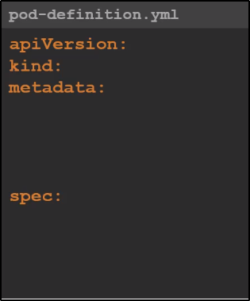

PODs with YAML
Ora impareremo come deployare YAML files per Kubernetes.
Kubernetes può usare YAML files per la creazione di:- PODs
- Replicas
- Deployment Services etc.
Un file YAML per Kubernetes contiene 4 campi essenziali, da root level:- API Version
- Kind
- Metadata
- Spec
Questi sono fields OBBLIGATORI da avere in un YAML file di configurazione per Kubernetes.

API Version:
Indica la versione di Kubernetes API usata per creare l'oggetto.
E' importante per scegliere bene le opzioni dell'API.

Kind:
Indica il tipo di oggetto che vogliamo creare.
Nel nostro caso, scegliamo di creare un POD.
Altri elementi come "kind" sono quelli indicati nella tabella a destra.

Metadata:
Qui possiamo indicare opzioni di configurazione da assegnare all'oggetto da creare.
I parametri da settare sono definiti da Kubernetes, ma i valori li scegliamo noi.
NB: Attenzione agli spazi: i figli necessitano di essere indentati! E' un dizionario!

Spec:
Qui possiamo aggiungere altre opzioni specifiche per l'elemento da creare.
A seconda del tipo di Kind, esistono differenti specifiche possibili.
Quindi va in base all'elemento che vogliamo creare!
Anche qui, Spec è un dizionario.
Ad esempio: possiamo avere il parametro "container", che è un Array.

Una volta creato il file YAML, possiamo usare il file di configurazione:

Con "get pods" possiamo vedere il nostro POD appena creato: